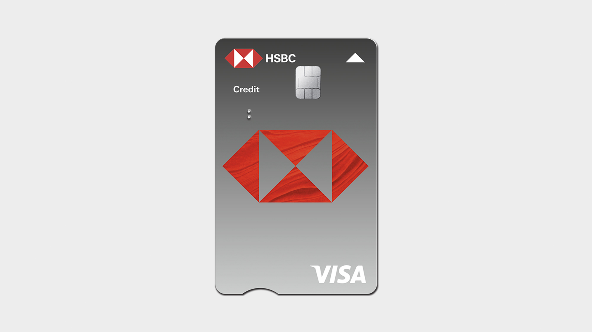

My Projects, Work, and industry Experience at HSBC
Credit Risk | Risk Analytics | Business Intelligence | Data Visualization | Data Storytelling
Together we thrive!

Reviving Card Acquisitions with Optimized Credit Strategies
Context
Classic credit card acquisitions in Vietnam were declining despite a customer base that appeared creditworthy. Portfolio-level metrics showed low on-us card usage, while customer-level data revealed that the same customers were actively spending on competitor cards, indicating a product competitiveness issue rather than a demand or risk problem.
Key Insight
Customer-level analysis of spend patterns, utilization, and risk profiles revealed a consistent pattern: credit limits on HSBC's classic card were materially lower than competitors', leading to underutilization and weaker acquisition appeal. Importantly, this constraint existed even among customers with strong repayment behavior and low risk indicators.
Action
I conducted a detailed analysis of customer spend capacity, utilization rates, and risk characteristics, and recommended increasing the credit limit on the classic card for eligible customers. The proposal balanced growth and risk by targeting customers whose profiles supported higher limits without materially increasing default exposure.
Impact
Following implementation, classic card acquisitions increased by 8% over the year. Ongoing monitoring also showed a sustained increase in card usage, validating that credit limits were a key driver of both adoption and engagement rather than a secondary factor.

Automated Inference Reporting (AIR) —PoC
Problem
Manual analysis of credit card acquisition, risk, and profitability metrics across Asian markets was time-intensive, error-prone, and not scalable, limiting timely decision-making.
Action
Built a Python-based Proof of Concept (PoC) automated inference and alerting engine using a configuration-driven framework to compute portfolio metrics, analyze QoQ/YoY trends, and detect anomalies based on the given thresholds. It is designed to be reusable across different reports.
Result
PoC demonstrated a 50% FTE reduction, eliminated ~80 hours/week of manual work, improved insight consistency and reporting accuracy, enabled proactive risk detection, and accelerated project delivery by 2 months—proving the framework could scale to future analytics use cases.
← BACK TO PROJECTS